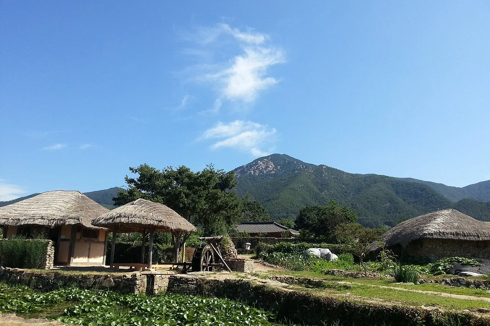
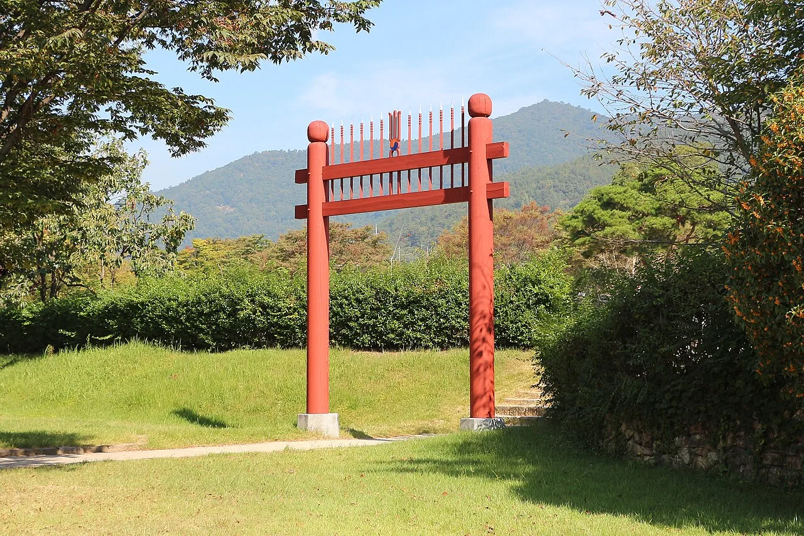
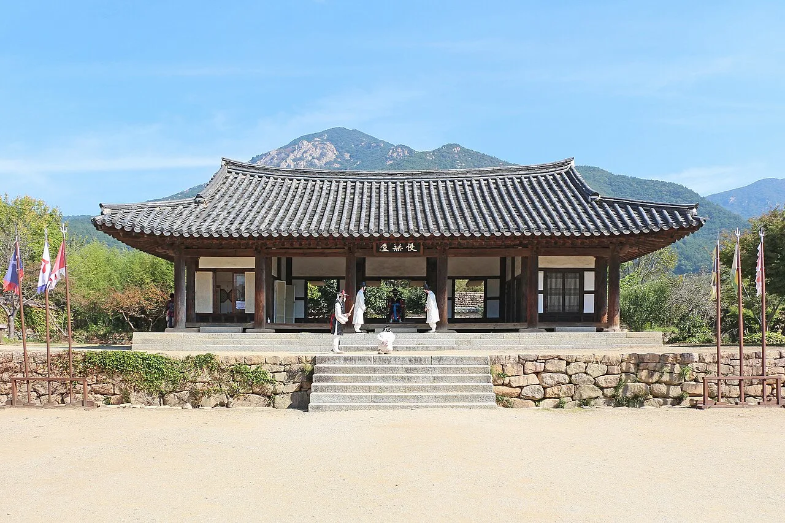
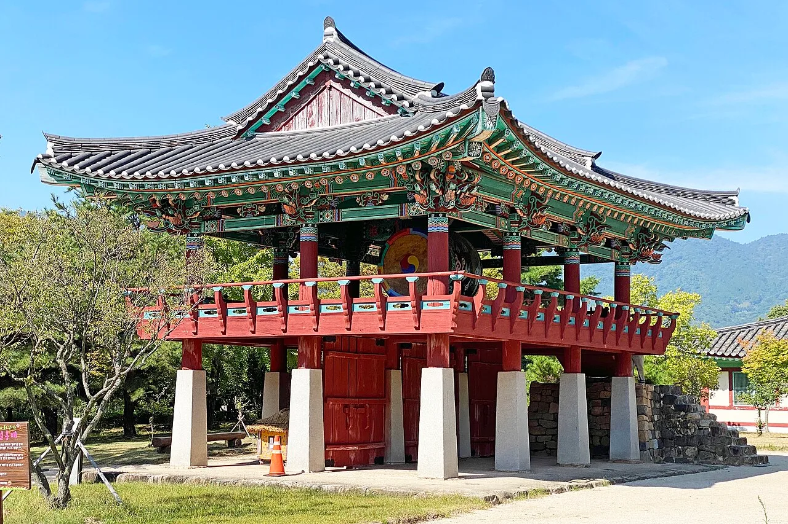
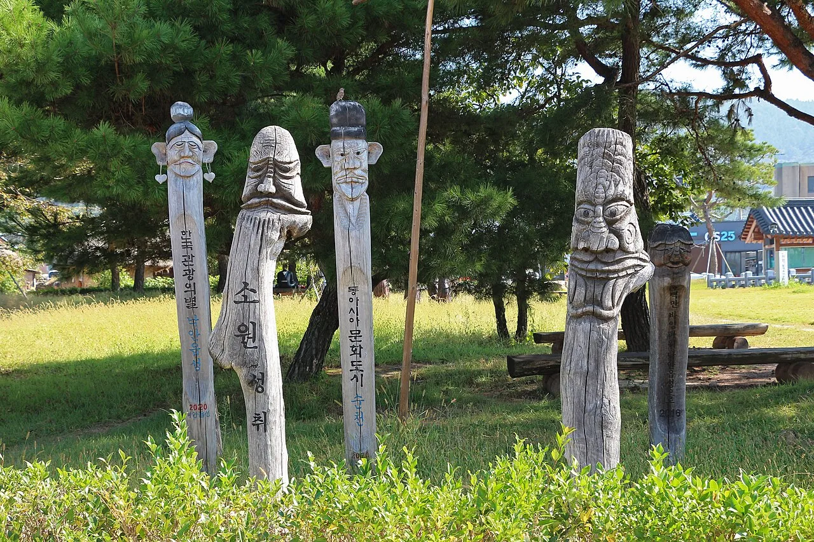
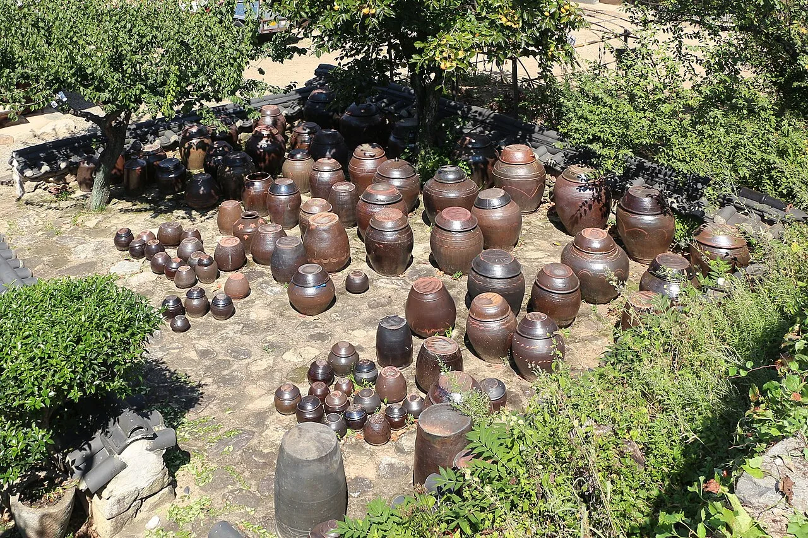
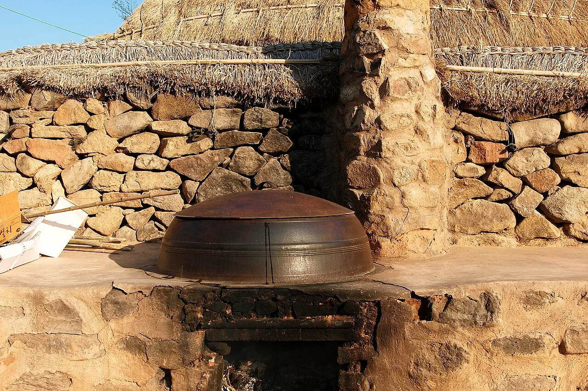
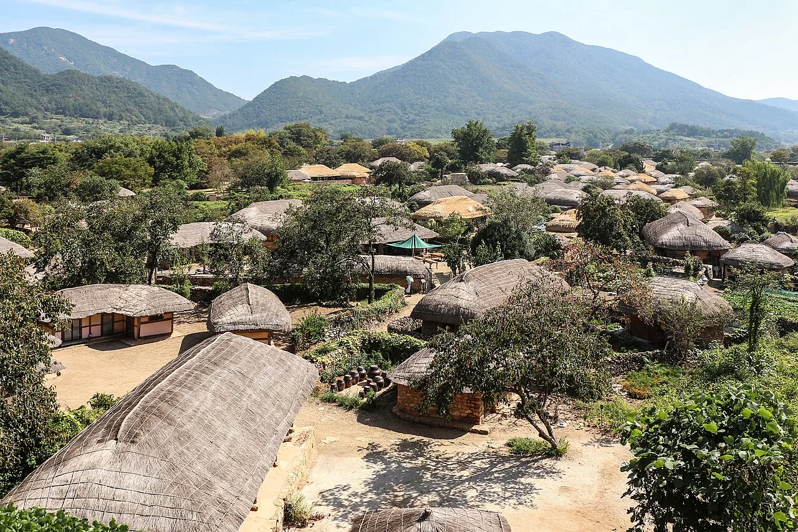

▲ 1.4km 성곽이 마을을 통째로 감싼 낙안읍성. 세트장이 아니라 지금도 228명이 실제로 살아가는 마을이다 ⓒ Wikimedia Commons

▲ 성곽 안쪽으로 들어서면 초가지붕이 늘어선 풍경이 펼쳐진다. 텃밭에는 실제로 작물이 자란다 ⓒ Wikimedia Commons
1. 관람객이 걷는 골목에 실제로 사람이 산다
낙안읍성이 다른 사극 세트장이나 민속촌과 결정적으로 다른 지점은 여기입니다. 전주 한옥마을이나 용인 한국민속촌이 관광·상업 목적으로 조성된 공간이라면, 낙안읍성은 성곽 안팎에서 지금도 주민이 실제로 살림을 꾸리는 '살아있는 마을'입니다. 2026년 기준으로 성 안팎에는 약 98세대, 228명의 주민이 거주하며 아궁이에 불을 때고 텃밭 농사를 짓습니다. 성 안에 들어선 건물은 모두 300여 동으로, 이 가운데 본채가 147동, 헛간·창고 같은 부속채가 161동에 이릅니다.
그래서 관람객이 걷는 골목 양옆으로는 실제 대문과 빨랫줄, 장독대, 텃밭이 그대로 이어집니다. 초가지붕 이엉은 매년 가을 새로 엮어 올리는데, 이 작업 역시 주민들의 실제 생활 관리 몫입니다. 관람 동선이 사유지와 겹치는 구간이 많은 만큼, 담장 안쪽이나 마당으로 함부로 들어가지 않는 기본 예의가 필요합니다.
2. 태조 때 흙으로, 인조 때 돌로 — 600년 넘게 이어온 성곽
낙안읍성의 역사는 조선 태조 6년(1397년)으로 거슬러 올라갑니다. 왜적의 침입을 막기 위해 김빈길 장군이 태조에게 상소를 올려 낙안 지역에 흙으로 쌓은 토성이 시작입니다. 이후 1424년(세종 6년)부터 여러 해에 걸쳐 돌로 다시 쌓아 규모를 넓혔고, 인조 4년(1626년) 임경업 장군이 낙안군수로 부임하면서 지금과 같은 석성 형태로 완성됐습니다.
성곽은 가로세로 12m 크기의 자연석을 쌓아 만든 장방형 평지성으로, 높이 4m, 너비 34m, 총길이 1,410m에 이릅니다. 동·서·남 세 방향에 성문이 있고, 동내·남내·서내 세 마을이 성곽 안에 고스란히 들어 있어 성곽과 생활 공간이 하나로 어우러진 국내에서 보기 드문 형태를 유지합니다. 원래는 북문도 있었으나 금전산 방향에서 호랑이 피해(호환)가 잦았다는 이유로 가장 먼저 폐쇄됐다는 이야기가 전해집니다. 성곽으로 둘러싸인 면적은 약 22만㎡에 이릅니다. 이 같은 가치를 인정받아 1983년 6월 14일 사적 제302호로 지정됐고, 유네스코 세계유산 잠정목록에도 이름을 올리고 있습니다.

▲ 낙안읍성 입구의 홍살문. 붉은 기둥이 성역의 시작을 알린다 ⓒ Wikimedia Commons
3. 동헌·낙민루·장승·장독대 — 성 안에서 놓치면 아까운 볼거리
성 안 관람 동선에서 가장 먼저 눈에 들어오는 건축물은 동헌(東軒)입니다. 조선시대 낙안군수가 업무를 보던 관아 건물로, 지금은 한복을 입고 사진을 찍는 방문객들의 포토스팟이 됐습니다. 동헌 주변에는 객사 등 관청 건물이 함께 남아 있어 조선시대 지방 행정의 구조를 짐작하게 합니다.

▲ 조선시대 낙안군수가 업무를 보던 동헌. 지금은 한복 체험 방문객들의 인기 포토스팟이다 ⓒ Wikimedia Commons
동헌 앞뜰에 자리한 낙민루(樂民樓)도 놓치기 아까운 포인트입니다. 붉은 단청과 대형 북을 갖춘 이 누각은 조선시대 남원 광한루, 순천 연자루와 함께 호남 3대 명루로 꼽혔습니다. 헌종 연간 낙안군수 민종헌이 중건했으나 이후 유실됐고, 1951년 전쟁 중 다시 소실된 것을 1987년 복원해 지금의 모습을 갖췄습니다. 성곽 위 관람로에 올라서면 성 안 초가마을과 성곽 밖 들판이 한눈에 들어옵니다. 성 입구에는 마을을 지키는 수호신 역할을 하는 장승 여러 기가 나란히 서 있어, 조선시대 민간신앙의 흔적을 보여줍니다.

▲ 동헌 앞에 자리한 낙민루. 호남 3대 명루로 꼽혔으며 소실과 복원을 거쳐 1987년 지금의 모습을 갖췄다 ⓒ Wikimedia Commons

▲ 마을 입구를 지키는 장승들. 조선시대 민간신앙의 흔적이 지금도 남아 있다 ⓒ Wikimedia Commons
골목 곳곳의 초가집 마당에는 장독대가 자리 잡고 있습니다. 관광용 소품이 아니라 실제 주민들이 사용하는 살림 도구이며, 부뚜막과 아궁이도 마찬가지로 실제 취사에 쓰입니다. 이런 생활의 흔적이야말로 낙안읍성을 다른 민속촌과 구분 짓는 핵심입니다.

▲ 초가집 마당의 장독대. 관광용 소품이 아니라 주민들이 실제로 쓰는 살림 도구다 ⓒ Wikimedia Commons

▲ 초가집 아궁이와 가마솥. 지금도 실제로 불을 때는 살림 공간이다 ⓒ Wikimedia Commons
4. 대장금부터 미스터 션샤인까지 — 사극 촬영지로도 유명
조선시대 원형을 그대로 간직한 풍경 덕분에 낙안읍성은 오랫동안 사극 드라마·영화 촬영지로 애용돼 왔습니다. <대장금>을 비롯해 <광해, 왕이 된 남자>, <구르미 그린 달빛>, <백일의 낭군님>, <미스터 션샤인>, <전, 란> 등 다수의 작품이 이곳에서 촬영됐습니다. 인접한 순천드라마촬영장과 묶어서 방문하면 사극 팬들에게는 특히 알찬 코스가 됩니다.
매년 가을에는 낙안읍성 민속문화축제도 열립니다. 1994년 처음 시작돼 2025년에는 10월 17일부터 19일까지 사흘간 제30회 행사가 열렸습니다. 낙안군수 부임 행렬 재현, 수문장 교대의식, 기마장군 순라의식, 전통혼례, 백중놀이, 성곽 쌓기 체험, 장사 씨름대회, 큰 줄다리기 같은 민속놀이와 국악 공연이 성곽 일원에서 펼쳐집니다. 가을 방문을 계획한다면 축제 일정을 미리 확인해볼 만합니다.
5. 입장료·운영시간·주차 (2026년 기준)
낙안읍성은 계절에 따라 운영시간이 달라지므로 방문 전 확인이 필요합니다. 입장료는 성인 4,000원, 청소년·군인 2,500원, 어린이 1,500원이며, 65세 이상과 순천 시민은 할인 또는 무료 혜택이 적용됩니다.
| 구분 | 내용 |
|---|---|
| 운영시간(5~9월) | 08:30~18:30 |
| 운영시간(2~4월, 10월) | 09:00~18:00 |
| 운영시간(1·11·12월) | 09:00~17:30 |
| 입장료(어른) | 4,000원 |
| 입장료(청소년·군인) | 2,500원 |
| 입장료(어린이) | 1,500원 |
| 65세 이상 무료, 순천 시민 및 자매도시 주민 할인 적용 · 연중무휴 | |
주차는 매표소 인근 주차장에서 무료로 이용할 수 있습니다. 장애인 전용 구역과 전기차 충전소가 마련돼 있고, 휠체어 대여 서비스도 제공됩니다. 다만 가을 민속문화축제 기간이나 단풍철 주말에는 방문객이 몰려 주차 대기가 생길 수 있으므로 오전 일찍 도착하는 편이 여유롭습니다.
6. 낙안읍성 다음 코스 — 순천만습지 연계 드라이브
낙안읍성만 보고 돌아가기엔 순천이 품은 볼거리가 아쉽습니다. 성 안 관람은 넉넉히 잡아도 1시간~1시간 30분이면 충분해, 같은 날 순천만습지나 순천만국가정원까지 묶어 돌아보는 여행자가 많습니다. 자가용 기준 낙안읍성에서 순천만습지까지는 약 40분 안팎이 걸립니다.

▲ 낙안읍성에서 차로 40분 거리인 순천만습지. 갈대숲 탐방로가 대표적인 볼거리다 ⓒ CarPrism
자주 추천되는 1박 2일 코스는 첫날 순천만국가정원~와온해변, 둘째 날 순천드라마촬영장~낙안읍성 순서입니다. 당일치기라면 오전에 낙안읍성에서 성곽마을을 둘러본 뒤, 오후에 순천만습지로 넘어가 갈대숲과 일몰을 즐기는 동선이 무난합니다.
| 구분 | 낙안읍성 | 순천만습지 |
|---|---|---|
| 성격 | 조선시대 성곽 민속마을(사적 302호) | 연안습지 생태공원 |
| 입장료(어른) | 4,000원 | 별도 확인 필요(계절별 상이) |
| 소요시간 | 1시간~1시간 30분 | 2시간 이상 |
| 이동거리 | - | 낙안읍성에서 차량 약 40분 |
순천만국가정원·순천만습지·낙안읍성·순천드라마촬영장·자연휴양림·순천시립 뿌리깊은나무박물관을 모두 이용할 수 있는 통합입장권도 있습니다. 성인 기준 12,000원(청소년·군인 8,500원, 어린이 5,500원)으로, 하루 이틀 사이 여러 곳을 돌아볼 계획이라면 개별 입장료보다 경제적입니다.
7. 다녀오기 전에 정리해 둘 것들
첫째, 실제 주민이 사는 마을이라는 점을 기억하십시오. 담장 안쪽 마당이나 개인 텃밭에 함부로 들어가지 않고, 큰 소리나 소음은 자제하는 편이 좋습니다.
둘째, 계절별 운영시간이 다릅니다. 여름철(5~9월)은 08:30~18:30, 봄가을(2~4월·10월)은 09:00~18:00, 겨울철(1·11·12월)은 09:00~17:30으로 운영시간이 짧아지므로 방문 전 확인이 필요합니다.
셋째, 가을 민속문화축제 기간은 붐빕니다. 매년 10월경 열리는 낙안읍성 민속문화축제 기간에는 방문객이 몰려 주차와 동선이 혼잡할 수 있으니, 여유 있게 오전 일찍 도착하는 편을 추천합니다.
넷째, 순천만습지까지 묶어서 계획하십시오. 차로 40분 거리인 만큼, 오전 낙안읍성-오후 순천만습지로 하루 일정을 짜면 조선시대 성곽마을과 연안습지 생태공원을 모두 경험할 수 있습니다.

▲ 초가지붕이 옹기종기 모인 낙안읍성 마을 전경. 매년 가을 이엉을 새로 엮어 올린다 ⓒ Wikimedia Commons
정리하면 이렇습니다. 낙안읍성은 조선시대 성곽과 생활 공간이 그대로 하나로 남은 국내에서 드문 사례이자, 지금도 실제 주민이 살아가는 '살아있는 유산'입니다. 사극 촬영지로서의 볼거리와 순천만습지 연계 코스까지 더하면, 하루 여행으로도 충분히 완결성 있는 일정이 완성됩니다.